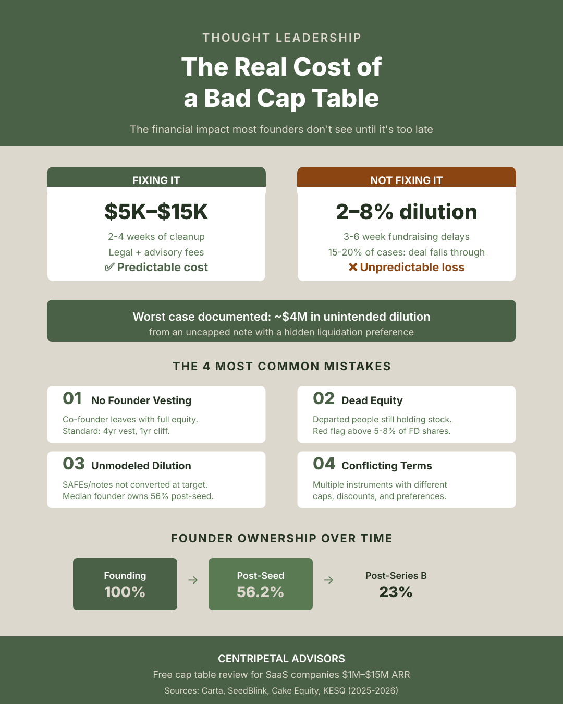

The Real Cost of a Bad Cap Table
A cap table is not just an ownership spreadsheet. It is a financing input, a board artifact, and a record of decisions that investors will try to reconcile.
Start with the ownership story
A clean cap table should answer a simple question without a scavenger hunt: who owns what today, under which instrument, and what approvals or vesting conditions affect that ownership? If the answer changes depending on which spreadsheet is open, the issue is already operational—not merely legal.

Three checks before a raise
1. Confirm the current holders
Identify founders, employees, advisors, former contributors, option-pool reservations, and every outstanding instrument. Inactive holders and missing vesting records can create questions that are harder to resolve once diligence begins.
2. Model conversion and dilution forward
Do not stop at the ownership percentage shown today. Model the instruments converting at the valuation and terms you are actually considering, then test how a later round changes founder and employee ownership.
3. Reconcile terms and approvals
Valuation caps, discounts, pro-rata rights, liquidation preferences, board approvals, and side letters should be traceable to executed documents. A cap table that omits the terms that change economics is not decision-ready.
Make cleanup a finance workstream
Cap-table review belongs in the same pre-raise cadence as ARR definitions, cash planning, and the data room. Assign an owner, keep the source documents together, record open questions, and make the forward model visible before investors ask for it.
Frequently asked questions
When should a founder review the cap table?
Before a financing process, ideally while there is still time to resolve ownership questions, instrument terms, and missing approvals without investor pressure.
What makes a cap table difficult to diligence?
Unclear vesting, inactive holders, inconsistent instrument terms, missing board approvals, and no forward dilution model make the ownership story hard to verify.
Make the next raise easier to diligence.
Pair cap-table cleanup with the Series A readiness guide and a finance operating cadence that keeps the ownership story current.
Open the Series A readiness guide